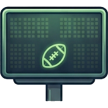
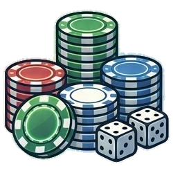
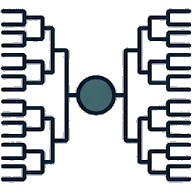
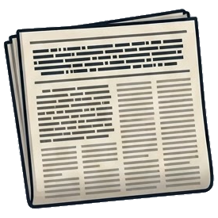
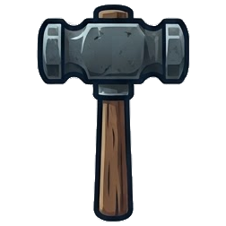

NCAA 180 Bot ballots
Top 25 · bot ballots 2026 · through week 4
| Rk | Team |  SCB |  VEG | BAND |  BRKT |  HEAD |  HAM | BAG | PROF | Sprd | Score | |
|---|---|---|---|---|---|---|---|---|---|---|---|---|
| 1 |  | Hawaii4-0 · Mountain West | 1 | 2 | 4 | 11 | 10 | 1 | 3 | 2 | 10 | +1.92 |
| 2 |  | Auburn4-0 · SEC | 2 | 1 | 2 | 4 | 12 | 4 | 24 | 10 | 23 | +1.81 |
| 3 |  | Washington State4-0 · PAC 12 | 6 | 4 | 5 | 15 | 24 | 5 | 7 | 3 | 21 | +1.77 |
| 4 |  | William & Mary4-0 · Big Sky | 4 | 3 | 1 | 14 | 7 | 11 | 14 | 1 | 13 | +1.76 |
| 5 |  | Youngstown State4-0 · Big Sky | 5 | 6 | 6 | 7 | 13 | 8 | 17 | 5 | 12 | +1.72 |
| 6 |  | Baylor3-1 · Big 12 | 21 | 7 | 11 | 22 | 1 | 15 | 1 | 4 | 21 | +1.68 |
| 7 |  | Middle Tennessee State4-0 · CUSA | 3 | 5 | 3 | 1 | 5 | 29 | 34 | 9 | 33 | +1.67 |
| 8 |  | Old Dominion4-0 · Wild | 8 | 28 | 22 | 6 | 4 | 22 | 5 | 7 | 24 | +1.64 |
| 9 |  | Syracuse3-1 · Big East | 24 | 12 | 10 | 55 | 3 | 6 | 4 | 14 | 52 | +1.58 |
| 10 |  | Kansas State4-0 · Big 12 | 7 | 8 | 28 | 16 | 18 | 2 | 53 | 8 | 51 | +1.48 |
| 11 |  | Southern Miss4-0 · Sun Belt | 12 | 17 | 20 | 12 | 31 | 7 | 13 | 31 | 24 | +1.46 |
| 12 |  | Dartmouth4-0 · Ivy | 9 | 11 | 24 | 5 | 30 | 14 | 25 | 12 | 25 | +1.44 |
| 13 |  | Arizona State3-1 · PAC 12 | 23 | 14 | 16 | 24 | 9 | 41 | 8 | 6 | 35 | +1.40 |
| 14 |  | South Carolina4-0 · SEC | 14 | 29 | 53 | 17 | 8 | 13 | 19 | 37 | 45 | +1.31 |
| 15 |  | Georgetown3-1 · Ivy | 20 | 10 | 15 | 35 | 26 | 17 | 16 | 13 | 25 | +1.29 |
| 16 |  | Colorado4-0 · PAC 12 | 11 | 26 | 40 | 8 | 22 | 9 | 61 | 25 | 53 | +1.26 |
| 17 |  | BYU4-0 · Mountain West | 17 | 52 | 60 | 9 | 16 | 18 | 31 | 26 | 51 | +1.23 |
| 18 |  | FSU4-0 · ACC | 13 | 18 | 36 | 2 | 56 | 25 | 33 | 17 | 54 | +1.21 |
| 19 |  | Campbell4-0 · Pioneer | 18 | 55 | 47 | 13 | 42 | 12 | 21 | 22 | 43 | +1.16 |
| 20 |  | Kentucky4-0 · SEC | 16 | 49 | 17 | 18 | 32 | 20 | 28 | 35 | 33 | +1.15 |
| 21 |  | Iowa3-1 · Big 10 | 26 | 22 | 7 | 46 | 14 | 26 | 30 | 20 | 39 | +1.14 |
| 22 |  | Portland State2-2 · Big Sky | 64 | 9 | 30 | 83 | 2 | 39 | 9 | 19 | 81 | +1.12 |
| 23 |  | Purdue4-0 · Big 10 | 15 | 25 | 33 | 10 | 77 | 10 | 89 | 40 | 79 | +1.08 |
| 24 |  | Clemson3-1 · ACC | 27 | 51 | 74 | 26 | 21 | 21 | 10 | 18 | 64 | +1.07 |
| 25 |  | Minnesota3-1 · Big 10 | 22 | 33 | 73 | 27 | 19 | 48 | 2 | 11 | 71 | +1.05 |
Bot ranks are out of all 180 teams (green = top, red = bottom). Struck = dropped (each team's best and worst bot). Sprd = worst bot rank minus best.
ACC · bot ballots 2026 · through week 4
| Rk | Team | SCB | VEG | BAND | BRKT | HEAD | HAM | BAG | PROF | Sprd | Score | |
|---|---|---|---|---|---|---|---|---|---|---|---|---|
| 18 | | FSU4-0 | 13 | 18 | 36 | 2 | 56 | 25 | 33 | 17 | 54 | +1.21 |
| 24 | | Clemson3-1 | 27 | 51 | 74 | 26 | 21 | 21 | 10 | 18 | 64 | +1.07 |
| 40 |  | Virginia3-1 | 40 | 31 | 64 | 39 | 44 | 32 | 49 | 33 | 33 | +0.81 |
| 52 |  | Georgia Tech3-1 | 43 | 44 | 49 | 38 | 100 | 47 | 81 | 67 | 62 | +0.61 |
| 67 |  | Wake Forest2-2 | 72 | 39 | 37 | 77 | 46 | 96 | 88 | 73 | 59 | +0.31 |
| 81 |  | NC State2-2 | 83 | 74 | 110 | 75 | 139 | 94 | 71 | 56 | 83 | +0.07 |
| 96 |  | North Carolina2-2 | 94 | 105 | 70 | 72 | 104 | 107 | 135 | 110 | 65 | -0.14 |
| 101 |  | Virginia Tech2-2 | 103 | 127 | 91 | 73 | 97 | 117 | 109 | 119 | 54 | -0.19 |
| 115 |  | Duke1-3 | 126 | 97 | 105 | 156 | 131 | 131 | 80 | 74 | 82 | -0.35 |
| 121 |  | Boston College1-3 | 132 | 108 | 125 | 121 | 73 | 142 | 99 | 97 | 69 | -0.39 |
| 142 |  | Louisville0-4 | 163 | 99 | 69 | 165 | 126 | 168 | 120 | 128 | 99 | -0.74 |
| 147 |  | Miami1-3 | 137 | 118 | 148 | 153 | 154 | 118 | 170 | 144 | 52 | -0.86 |
Bot ranks are out of all 180 teams (green = top, red = bottom). Struck = dropped (each team's best and worst bot). Sprd = worst bot rank minus best.
Big 10 · bot ballots 2026 · through week 4
| Rk | Team | SCB | VEG | BAND | BRKT | HEAD | HAM | BAG | PROF | Sprd | Score | |
|---|---|---|---|---|---|---|---|---|---|---|---|---|
| 21 | | Iowa3-1 | 26 | 22 | 7 | 46 | 14 | 26 | 30 | 20 | 39 | +1.14 |
| 23 | | Purdue4-0 | 15 | 25 | 33 | 10 | 77 | 10 | 89 | 40 | 79 | +1.08 |
| 25 | | Minnesota3-1 | 22 | 33 | 73 | 27 | 19 | 48 | 2 | 11 | 71 | +1.05 |
| 41 |  | Illinois3-1 | 37 | 45 | 12 | 47 | 70 | 16 | 68 | 60 | 58 | +0.80 |
| 47 |  | Michigan2-2 | 73 | 47 | 19 | 95 | 29 | 51 | 27 | 51 | 76 | +0.71 |
| 78 |  | Nebraska1-3 | 118 | 54 | 56 | 128 | 52 | 133 | 32 | 58 | 101 | +0.15 |
| 79 |  | Ohio State2-2 | 78 | 63 | 78 | 103 | 55 | 75 | 102 | 90 | 48 | +0.12 |
| 103 |  | Penn State3-1 | 59 | 134 | 153 | 49 | 132 | 65 | 143 | 109 | 104 | -0.21 |
| 153 |  | Wisconsin1-3 | 152 | 154 | 169 | 136 | 75 | 144 | 145 | 147 | 94 | -0.93 |
| 161 |  | Northwestern1-3 | 159 | 167 | 154 | 129 | 149 | 171 | 161 | 170 | 42 | -1.20 |
| 170 |  | Indiana1-3 | 156 | 163 | 178 | 158 | 178 | 170 | 174 | 163 | 22 | -1.50 |
| 175 |  | Michigan State0-4 | 173 | 166 | 173 | 175 | 176 | 165 | 158 | 167 | 18 | -1.68 |
Bot ranks are out of all 180 teams (green = top, red = bottom). Struck = dropped (each team's best and worst bot). Sprd = worst bot rank minus best.
Big 12 · bot ballots 2026 · through week 4
| Rk | Team | SCB | VEG | BAND | BRKT | HEAD | HAM | BAG | PROF | Sprd | Score | |
|---|---|---|---|---|---|---|---|---|---|---|---|---|
| 6 | | Baylor3-1 | 21 | 7 | 11 | 22 | 1 | 15 | 1 | 4 | 21 | +1.68 |
| 10 | | Kansas State4-0 | 7 | 8 | 28 | 16 | 18 | 2 | 53 | 8 | 51 | +1.48 |
| 34 |  | West Virginia3-1 | 25 | 13 | 26 | 23 | 33 | 60 | 72 | 50 | 59 | +0.88 |
| 53 |  | Texas A&M2-2 | 71 | 41 | 25 | 63 | 67 | 110 | 36 | 30 | 85 | +0.57 |
| 89 |  | Missouri3-1 | 58 | 131 | 84 | 56 | 127 | 86 | 115 | 102 | 75 | -0.02 |
| 105 |  | TCU1-3 | 123 | 85 | 124 | 132 | 105 | 116 | 86 | 79 | 53 | -0.24 |
| 106 |  | Texas2-2 | 100 | 114 | 99 | 67 | 123 | 101 | 133 | 126 | 66 | -0.24 |
| 109 |  | Oklahoma2-2 | 109 | 136 | 85 | 105 | 147 | 78 | 93 | 134 | 69 | -0.27 |
| 127 |  | Iowa State2-2 | 111 | 133 | 137 | 111 | 119 | 87 | 148 | 145 | 61 | -0.46 |
| 132 |  | Texas Tech1-3 | 143 | 129 | 130 | 122 | 117 | 150 | 98 | 123 | 52 | -0.55 |
| 163 |  | Oklahoma State0-4 | 169 | 155 | 159 | 179 | 158 | 157 | 147 | 153 | 32 | -1.29 |
| 164 |  | Kansas1-3 | 161 | 175 | 164 | 162 | 152 | 167 | 149 | 173 | 26 | -1.31 |
Bot ranks are out of all 180 teams (green = top, red = bottom). Struck = dropped (each team's best and worst bot). Sprd = worst bot rank minus best.
Big East · bot ballots 2026 · through week 4
| Rk | Team | SCB | VEG | BAND | BRKT | HEAD | HAM | BAG | PROF | Sprd | Score | |
|---|---|---|---|---|---|---|---|---|---|---|---|---|
| 9 | | Syracuse3-1 | 24 | 12 | 10 | 55 | 3 | 6 | 4 | 14 | 52 | +1.58 |
| 31 |  | Coastal Carolina3-1 | 38 | 37 | 9 | 33 | 85 | 44 | 29 | 24 | 76 | +0.94 |
| 44 |  | Pittsburgh4-0 | 19 | 62 | 107 | 3 | 92 | 23 | 90 | 27 | 104 | +0.77 |
| 70 |  | UCF2-2 | 80 | 56 | 55 | 69 | 94 | 115 | 74 | 69 | 60 | +0.24 |
| 73 |  | UCONN2-2 | 88 | 88 | 50 | 78 | 61 | 83 | 55 | 86 | 38 | +0.21 |
| 82 |  | Navy3-1 | 57 | 111 | 102 | 42 | 71 | 93 | 127 | 111 | 85 | +0.04 |
| 86 |  | Army3-1 | 56 | 93 | 114 | 41 | 143 | 69 | 136 | 101 | 102 | -0.01 |
| 100 |  | Notre Dame1-3 | 121 | 82 | 90 | 147 | 57 | 113 | 95 | 93 | 90 | -0.18 |
| 119 |  | Rutgers1-3 | 129 | 104 | 68 | 161 | 95 | 129 | 94 | 121 | 93 | -0.39 |
| 126 |  | South Dakota State1-3 | 125 | 80 | 106 | 140 | 90 | 130 | 121 | 125 | 60 | -0.45 |
| 145 |  | USF1-3 | 142 | 140 | 155 | 131 | 72 | 128 | 118 | 151 | 83 | -0.77 |
| 177 |  | Maryland0-4 | 177 | 174 | 165 | 169 | 177 | 175 | 165 | 177 | 12 | -1.74 |
Bot ranks are out of all 180 teams (green = top, red = bottom). Struck = dropped (each team's best and worst bot). Sprd = worst bot rank minus best.
Big Sky · bot ballots 2026 · through week 4
| Rk | Team | SCB | VEG | BAND | BRKT | HEAD | HAM | BAG | PROF | Sprd | Score | |
|---|---|---|---|---|---|---|---|---|---|---|---|---|
| 4 | | William & Mary4-0 | 4 | 3 | 1 | 14 | 7 | 11 | 14 | 1 | 13 | +1.76 |
| 5 | | Youngstown State4-0 | 5 | 6 | 6 | 7 | 13 | 8 | 17 | 5 | 12 | +1.72 |
| 22 | | Portland State2-2 | 64 | 9 | 30 | 83 | 2 | 39 | 9 | 19 | 81 | +1.12 |
| 56 |  | Eastern Washington3-1 | 45 | 59 | 27 | 45 | 111 | 28 | 107 | 80 | 84 | +0.55 |
| 58 |  | Montana State2-2 | 86 | 69 | 42 | 98 | 36 | 80 | 15 | 57 | 83 | +0.44 |
| 66 |  | Stony Brook2-2 | 82 | 60 | 54 | 106 | 59 | 53 | 57 | 100 | 53 | +0.31 |
| 97 |  | Richmond3-1 | 61 | 142 | 129 | 59 | 129 | 79 | 124 | 105 | 83 | -0.14 |
| 108 |  | Rhode Island1-3 | 130 | 106 | 103 | 160 | 48 | 104 | 84 | 98 | 112 | -0.26 |
| 120 |  | Villanova2-2 | 107 | 123 | 126 | 74 | 163 | 63 | 160 | 113 | 100 | -0.39 |
| 172 |  | Maine1-3 | 162 | 176 | 168 | 151 | 173 | 172 | 178 | 169 | 27 | -1.59 |
| 179 |  | Weber State0-4 | 180 | 180 | 179 | 171 | 180 | 179 | 180 | 180 | 9 | -2.10 |
| 180 |  | Northern Iowa0-4 | 179 | 179 | 180 | 168 | 179 | 180 | 179 | 179 | 12 | -2.16 |
Bot ranks are out of all 180 teams (green = top, red = bottom). Struck = dropped (each team's best and worst bot). Sprd = worst bot rank minus best.
CUSA · bot ballots 2026 · through week 4
| Rk | Team | SCB | VEG | BAND | BRKT | HEAD | HAM | BAG | PROF | Sprd | Score | |
|---|---|---|---|---|---|---|---|---|---|---|---|---|
| 7 | | Middle Tennessee State4-0 | 3 | 5 | 3 | 1 | 5 | 29 | 34 | 9 | 33 | +1.67 |
| 28 |  | South Alabama4-0 | 10 | 32 | 59 | 19 | 58 | 3 | 35 | 38 | 56 | +1.03 |
| 29 |  | Georgia State3-1 | 35 | 27 | 39 | 31 | 23 | 27 | 47 | 34 | 24 | +0.97 |
| 32 |  | Arkansas State3-1 | 30 | 16 | 14 | 30 | 43 | 34 | 64 | 41 | 50 | +0.93 |
| 91 |  | Louisiana Monroe3-1 | 55 | 102 | 67 | 64 | 153 | 45 | 146 | 114 | 108 | -0.03 |
| 102 |  | Florida Atlantic1-3 | 122 | 94 | 116 | 118 | 25 | 140 | 62 | 83 | 115 | -0.20 |
| 111 |  | Texas State3-1 | 60 | 141 | 134 | 54 | 145 | 70 | 157 | 122 | 103 | -0.28 |
| 124 |  | Troy1-3 | 134 | 125 | 87 | 125 | 135 | 149 | 43 | 103 | 106 | -0.44 |
| 136 |  | Western Kentucky0-4 | 166 | 119 | 119 | 163 | 89 | 156 | 60 | 116 | 106 | -0.63 |
| 137 |  | Florida International2-2 | 114 | 156 | 161 | 108 | 172 | 109 | 58 | 140 | 114 | -0.67 |
| 154 |  | North Texas0-4 | 167 | 143 | 152 | 177 | 122 | 161 | 103 | 129 | 74 | -0.97 |
| 173 |  | Louisiana0-4 | 175 | 170 | 170 | 178 | 150 | 173 | 173 | 166 | 28 | -1.66 |
Bot ranks are out of all 180 teams (green = top, red = bottom). Struck = dropped (each team's best and worst bot). Sprd = worst bot rank minus best.
HBCU · bot ballots 2026 · through week 4
| Rk | Team | SCB | VEG | BAND | BRKT | HEAD | HAM | BAG | PROF | Sprd | Score | |
|---|---|---|---|---|---|---|---|---|---|---|---|---|
| 30 |  | Southern3-1 | 29 | 15 | 13 | 60 | 40 | 40 | 22 | 44 | 47 | +0.95 |
| 38 |  | Delaware State3-1 | 34 | 50 | 45 | 34 | 15 | 43 | 48 | 43 | 35 | +0.82 |
| 42 |  | North Carolina A&T3-1 | 42 | 40 | 57 | 40 | 35 | 46 | 41 | 32 | 25 | +0.79 |
| 69 |  | Florida A&M2-2 | 79 | 70 | 117 | 85 | 106 | 50 | 50 | 53 | 67 | +0.25 |
| 83 |  | Grambling State2-2 | 96 | 90 | 79 | 99 | 82 | 37 | 96 | 87 | 62 | +0.04 |
| 84 |  | Alcorn State2-2 | 92 | 96 | 104 | 89 | 118 | 98 | 56 | 62 | 62 | +0.03 |
| 110 |  | Tuskegee2-2 | 108 | 124 | 66 | 114 | 142 | 95 | 139 | 99 | 76 | -0.27 |
| 114 |  | Mississippi Valley State2-2 | 106 | 138 | 167 | 100 | 79 | 126 | 51 | 131 | 116 | -0.34 |
| 116 |  | Bethune - Cookman2-2 | 104 | 130 | 138 | 86 | 114 | 111 | 106 | 136 | 52 | -0.35 |
| 123 |  | Howard2-2 | 112 | 144 | 133 | 87 | 98 | 124 | 134 | 138 | 57 | -0.43 |
| 152 |  | Jackson State0-4 | 164 | 107 | 140 | 174 | 115 | 160 | 142 | 141 | 67 | -0.92 |
| 165 |  | Alabama A&M1-3 | 160 | 172 | 171 | 149 | 174 | 146 | 162 | 168 | 28 | -1.39 |
Bot ranks are out of all 180 teams (green = top, red = bottom). Struck = dropped (each team's best and worst bot). Sprd = worst bot rank minus best.
Ivy · bot ballots 2026 · through week 4
| Rk | Team | SCB | VEG | BAND | BRKT | HEAD | HAM | BAG | PROF | Sprd | Score | |
|---|---|---|---|---|---|---|---|---|---|---|---|---|
| 12 | | Dartmouth4-0 | 9 | 11 | 24 | 5 | 30 | 14 | 25 | 12 | 25 | +1.44 |
| 15 | | Georgetown3-1 | 20 | 10 | 15 | 35 | 26 | 17 | 16 | 13 | 25 | +1.29 |
| 39 |  | Brown3-1 | 49 | 73 | 35 | 36 | 20 | 64 | 18 | 54 | 55 | +0.81 |
| 55 |  | Cornell3-1 | 46 | 67 | 43 | 48 | 68 | 71 | 73 | 48 | 30 | +0.56 |
| 61 |  | Columbia3-1 | 51 | 78 | 96 | 51 | 74 | 81 | 66 | 65 | 45 | +0.35 |
| 68 |  | Colgate2-2 | 81 | 61 | 31 | 104 | 64 | 38 | 87 | 82 | 73 | +0.30 |
| 93 |  | Lehigh2-2 | 95 | 92 | 111 | 102 | 78 | 56 | 114 | 89 | 58 | -0.04 |
| 125 |  | Yale1-3 | 128 | 98 | 142 | 146 | 113 | 132 | 75 | 92 | 71 | -0.44 |
| 148 |  | Harvard1-3 | 150 | 147 | 131 | 135 | 141 | 143 | 159 | 150 | 28 | -0.87 |
| 150 |  | Bucknell0-4 | 165 | 113 | 65 | 164 | 138 | 174 | 132 | 135 | 109 | -0.90 |
| 156 |  | Penn1-3 | 151 | 150 | 158 | 119 | 166 | 148 | 144 | 157 | 47 | -1.02 |
| 157 |  | Princeton1-3 | 145 | 146 | 156 | 134 | 165 | 139 | 168 | 154 | 34 | -1.05 |
Bot ranks are out of all 180 teams (green = top, red = bottom). Struck = dropped (each team's best and worst bot). Sprd = worst bot rank minus best.
Mountain West · bot ballots 2026 · through week 4
| Rk | Team | SCB | VEG | BAND | BRKT | HEAD | HAM | BAG | PROF | Sprd | Score | |
|---|---|---|---|---|---|---|---|---|---|---|---|---|
| 1 | | Hawaii4-0 | 1 | 2 | 4 | 11 | 10 | 1 | 3 | 2 | 10 | +1.92 |
| 17 | | BYU4-0 | 17 | 52 | 60 | 9 | 16 | 18 | 31 | 26 | 51 | +1.23 |
| 33 |  | Colorado State3-1 | 33 | 36 | 38 | 58 | 17 | 19 | 65 | 36 | 48 | +0.93 |
| 57 |  | UNLV3-1 | 52 | 89 | 58 | 50 | 51 | 36 | 100 | 68 | 64 | +0.51 |
| 59 |  | Fresno State2-2 | 70 | 20 | 29 | 82 | 41 | 100 | 79 | 70 | 80 | +0.40 |
| 85 |  | San Diego State2-2 | 98 | 101 | 143 | 92 | 109 | 68 | 82 | 78 | 75 | +0.00 |
| 95 |  | Nevada2-2 | 97 | 109 | 94 | 113 | 86 | 88 | 105 | 94 | 27 | -0.07 |
| 140 | NIU1-3 | 133 | 116 | 145 | 126 | 125 | 152 | 92 | 143 | 60 | -0.68 | |
| 141 |  | Wyoming1-3 | 147 | 139 | 132 | 127 | 140 | 135 | 85 | 137 | 62 | -0.69 |
| 151 |  | New Mexico1-3 | 154 | 161 | 160 | 142 | 128 | 164 | 126 | 118 | 46 | -0.90 |
| 166 |  | Boise State0-4 | 171 | 160 | 146 | 173 | 160 | 178 | 154 | 160 | 32 | -1.40 |
| 167 |  | Air Force1-3 | 155 | 168 | 162 | 157 | 170 | 138 | 176 | 172 | 38 | -1.41 |
Bot ranks are out of all 180 teams (green = top, red = bottom). Struck = dropped (each team's best and worst bot). Sprd = worst bot rank minus best.
Ohio Valley · bot ballots 2026 · through week 4
| Rk | Team | SCB | VEG | BAND | BRKT | HEAD | HAM | BAG | PROF | Sprd | Score | |
|---|---|---|---|---|---|---|---|---|---|---|---|---|
| 45 |  | Belmont3-1 | 41 | 43 | 8 | 25 | 88 | 61 | 40 | 59 | 80 | +0.75 |
| 46 |  | Delaware3-1 | 44 | 48 | 46 | 57 | 63 | 24 | 54 | 52 | 39 | +0.71 |
| 49 |  | North Alabama2-2 | 67 | 21 | 51 | 112 | 27 | 72 | 26 | 29 | 91 | +0.66 |
| 50 |  | Chattanooga2-2 | 66 | 35 | 88 | 65 | 49 | 33 | 12 | 28 | 76 | +0.64 |
| 51 |  | North Carolina Central2-2 | 69 | 23 | 52 | 76 | 37 | 49 | 38 | 47 | 53 | +0.63 |
| 54 |  | ETSU2-2 | 68 | 42 | 32 | 62 | 50 | 97 | 39 | 45 | 65 | +0.56 |
| 72 |  | Monmouth3-1 | 53 | 95 | 100 | 37 | 110 | 62 | 141 | 75 | 104 | +0.21 |
| 92 |  | Charleston Southern2-2 | 90 | 75 | 80 | 66 | 93 | 134 | 140 | 85 | 74 | -0.04 |
| 133 |  | Eastern Kentucky1-3 | 140 | 128 | 122 | 133 | 84 | 141 | 119 | 112 | 57 | -0.58 |
| 134 |  | Morehead State1-3 | 136 | 117 | 118 | 152 | 102 | 106 | 130 | 148 | 50 | -0.58 |
| 144 |  | Jacksonville State2-2 | 116 | 159 | 128 | 70 | 169 | 136 | 155 | 142 | 99 | -0.74 |
| 155 |  | Kennesaw State1-3 | 146 | 152 | 139 | 120 | 164 | 154 | 156 | 158 | 44 | -0.99 |
Bot ranks are out of all 180 teams (green = top, red = bottom). Struck = dropped (each team's best and worst bot). Sprd = worst bot rank minus best.
PAC 12 · bot ballots 2026 · through week 4
| Rk | Team | SCB | VEG | BAND | BRKT | HEAD | HAM | BAG | PROF | Sprd | Score | |
|---|---|---|---|---|---|---|---|---|---|---|---|---|
| 3 | | Washington State4-0 | 6 | 4 | 5 | 15 | 24 | 5 | 7 | 3 | 21 | +1.77 |
| 13 | | Arizona State3-1 | 23 | 14 | 16 | 24 | 9 | 41 | 8 | 6 | 35 | +1.40 |
| 16 | | Colorado4-0 | 11 | 26 | 40 | 8 | 22 | 9 | 61 | 25 | 53 | +1.26 |
| 71 |  | UCLA2-2 | 77 | 57 | 93 | 68 | 69 | 105 | 77 | 46 | 59 | +0.22 |
| 75 |  | USC2-2 | 74 | 58 | 92 | 91 | 81 | 122 | 20 | 71 | 102 | +0.20 |
| 88 |  | Stanford2-2 | 99 | 100 | 34 | 109 | 133 | 67 | 97 | 84 | 99 | -0.01 |
| 98 |  | Oregon State2-2 | 85 | 81 | 123 | 101 | 120 | 73 | 122 | 107 | 50 | -0.16 |
| 130 |  | Washington2-2 | 113 | 145 | 135 | 110 | 146 | 112 | 101 | 139 | 45 | -0.49 |
| 135 |  | Utah1-3 | 141 | 135 | 147 | 130 | 108 | 108 | 112 | 120 | 39 | -0.58 |
| 149 |  | California2-2 | 117 | 171 | 172 | 116 | 101 | 123 | 164 | 159 | 71 | -0.88 |
| 168 |  | Arizona0-4 | 170 | 162 | 144 | 166 | 151 | 169 | 169 | 174 | 30 | -1.42 |
| 178 |  | Oregon0-4 | 178 | 178 | 174 | 176 | 168 | 176 | 177 | 176 | 10 | -1.86 |
Bot ranks are out of all 180 teams (green = top, red = bottom). Struck = dropped (each team's best and worst bot). Sprd = worst bot rank minus best.
Pioneer · bot ballots 2026 · through week 4
| Rk | Team | SCB | VEG | BAND | BRKT | HEAD | HAM | BAG | PROF | Sprd | Score | |
|---|---|---|---|---|---|---|---|---|---|---|---|---|
| 19 | | Campbell4-0 | 18 | 55 | 47 | 13 | 42 | 12 | 21 | 22 | 43 | +1.16 |
| 27 |  | UT Martin3-1 | 36 | 30 | 21 | 43 | 54 | 30 | 23 | 16 | 38 | +1.03 |
| 60 |  | Davidson3-1 | 47 | 66 | 72 | 53 | 60 | 90 | 69 | 76 | 43 | +0.38 |
| 62 |  | Austin Peay3-1 | 48 | 76 | 75 | 32 | 87 | 92 | 123 | 61 | 91 | +0.33 |
| 63 |  | Murray State2-2 | 75 | 65 | 77 | 79 | 53 | 76 | 52 | 63 | 27 | +0.33 |
| 80 |  | Furman2-2 | 91 | 83 | 113 | 93 | 66 | 85 | 37 | 77 | 76 | +0.11 |
| 87 |  | SE Missouri State2-2 | 93 | 84 | 121 | 96 | 91 | 74 | 108 | 81 | 47 | -0.01 |
| 94 |  | Butler2-2 | 102 | 112 | 81 | 94 | 64 | 91 | 125 | 104 | 61 | -0.07 |
| 117 |  | Holy Cross1-3 | 138 | 121 | 109 | 144 | 76 | 114 | 91 | 108 | 68 | -0.37 |
| 139 |  | Dayton1-3 | 144 | 137 | 95 | 138 | 130 | 127 | 131 | 146 | 51 | -0.67 |
| 158 |  | Wofford0-4 | 168 | 151 | 151 | 170 | 116 | 158 | 104 | 152 | 66 | -1.07 |
| 159 |  | Tennessee State1-3 | 149 | 149 | 120 | 139 | 161 | 155 | 172 | 164 | 52 | -1.08 |
Bot ranks are out of all 180 teams (green = top, red = bottom). Struck = dropped (each team's best and worst bot). Sprd = worst bot rank minus best.
SEC · bot ballots 2026 · through week 4
| Rk | Team | SCB | VEG | BAND | BRKT | HEAD | HAM | BAG | PROF | Sprd | Score | |
|---|---|---|---|---|---|---|---|---|---|---|---|---|
| 2 | | Auburn4-0 | 2 | 1 | 2 | 4 | 12 | 4 | 24 | 10 | 23 | +1.81 |
| 14 | | South Carolina4-0 | 14 | 29 | 53 | 17 | 8 | 13 | 19 | 37 | 45 | +1.31 |
| 20 | | Kentucky4-0 | 16 | 49 | 17 | 18 | 32 | 20 | 28 | 35 | 33 | +1.15 |
| 35 |  | Mississippi State2-2 | 63 | 24 | 48 | 88 | 11 | 55 | 11 | 23 | 77 | +0.86 |
| 37 |  | LSU3-1 | 31 | 34 | 41 | 29 | 34 | 54 | 45 | 21 | 33 | +0.85 |
| 118 |  | Tennessee1-3 | 124 | 86 | 44 | 155 | 137 | 84 | 116 | 124 | 111 | -0.38 |
| 131 |  | Georgia2-2 | 101 | 115 | 141 | 90 | 159 | 119 | 153 | 130 | 69 | -0.52 |
| 138 |  | Ole Miss1-3 | 135 | 120 | 61 | 148 | 136 | 137 | 117 | 149 | 88 | -0.67 |
| 143 |  | Arkansas1-3 | 148 | 148 | 150 | 141 | 99 | 163 | 83 | 132 | 80 | -0.74 |
| 160 |  | Alabama1-3 | 158 | 169 | 166 | 143 | 156 | 151 | 150 | 161 | 26 | -1.16 |
| 171 |  | Vanderbilt1-3 | 157 | 165 | 175 | 154 | 175 | 166 | 175 | 165 | 21 | -1.50 |
| 174 |  | Florida0-4 | 174 | 173 | 177 | 172 | 167 | 159 | 167 | 171 | 18 | -1.68 |
Bot ranks are out of all 180 teams (green = top, red = bottom). Struck = dropped (each team's best and worst bot). Sprd = worst bot rank minus best.
Sun Belt · bot ballots 2026 · through week 4
| Rk | Team | SCB | VEG | BAND | BRKT | HEAD | HAM | BAG | PROF | Sprd | Score | |
|---|---|---|---|---|---|---|---|---|---|---|---|---|
| 11 | | Southern Miss4-0 | 12 | 17 | 20 | 12 | 31 | 7 | 13 | 31 | 24 | +1.46 |
| 26 |  | Temple3-1 | 32 | 19 | 18 | 20 | 45 | 31 | 42 | 15 | 30 | +1.04 |
| 36 |  | Tulsa3-1 | 39 | 38 | 23 | 28 | 39 | 42 | 63 | 49 | 40 | +0.85 |
| 43 |  | Louisiana Tech3-1 | 28 | 46 | 98 | 44 | 28 | 35 | 44 | 55 | 70 | +0.79 |
| 65 |  | Memphis2-2 | 76 | 53 | 89 | 80 | 80 | 77 | 46 | 39 | 50 | +0.31 |
| 74 |  | Georgia Southern2-2 | 89 | 77 | 83 | 71 | 134 | 59 | 67 | 72 | 75 | +0.20 |
| 90 |  | UTSA2-2 | 84 | 72 | 86 | 81 | 112 | 102 | 151 | 95 | 79 | -0.03 |
| 107 |  | Marshall2-2 | 110 | 122 | 112 | 97 | 107 | 121 | 113 | 96 | 26 | -0.25 |
| 112 |  | UTEP1-3 | 127 | 91 | 115 | 137 | 38 | 120 | 59 | 127 | 99 | -0.29 |
| 128 |  | Tulane1-3 | 131 | 110 | 101 | 159 | 96 | 125 | 110 | 133 | 63 | -0.47 |
| 162 |  | Rice1-3 | 153 | 157 | 149 | 123 | 171 | 162 | 171 | 162 | 48 | -1.22 |
| 176 |  | UAB0-4 | 176 | 177 | 176 | 167 | 148 | 177 | 152 | 178 | 30 | -1.70 |
Bot ranks are out of all 180 teams (green = top, red = bottom). Struck = dropped (each team's best and worst bot). Sprd = worst bot rank minus best.
Wild · bot ballots 2026 · through week 4
| Rk | Team | SCB | VEG | BAND | BRKT | HEAD | HAM | BAG | PROF | Sprd | Score | |
|---|---|---|---|---|---|---|---|---|---|---|---|---|
| 8 | | Old Dominion4-0 | 8 | 28 | 22 | 6 | 4 | 22 | 5 | 7 | 24 | +1.64 |
| 48 |  | Montana2-2 | 65 | 68 | 62 | 115 | 6 | 52 | 6 | 42 | 109 | +0.70 |
| 64 |  | UNC Charlotte3-1 | 50 | 87 | 71 | 21 | 121 | 57 | 137 | 64 | 116 | +0.32 |
| 76 |  | James Madison2-2 | 87 | 71 | 63 | 84 | 83 | 89 | 70 | 66 | 26 | +0.20 |
| 77 |  | Wichita State3-1 | 54 | 103 | 97 | 61 | 62 | 66 | 129 | 88 | 75 | +0.17 |
| 99 |  | Citadel1-3 | 120 | 79 | 82 | 150 | 124 | 82 | 76 | 106 | 74 | -0.16 |
| 104 |  | Eastern Michigan1-3 | 119 | 64 | 108 | 145 | 47 | 145 | 78 | 91 | 98 | -0.22 |
| 113 |  | North Dakota State2-2 | 105 | 126 | 76 | 117 | 144 | 58 | 163 | 117 | 105 | -0.32 |
| 122 |  | South Dakota3-1 | 62 | 153 | 157 | 52 | 162 | 103 | 111 | 115 | 110 | -0.43 |
| 129 |  | Central Arkansas2-2 | 115 | 158 | 136 | 107 | 103 | 99 | 128 | 156 | 59 | -0.48 |
| 146 |  | Central Michigan1-3 | 139 | 132 | 127 | 124 | 157 | 147 | 138 | 155 | 33 | -0.84 |
| 169 |  | San Jose State0-4 | 172 | 164 | 163 | 180 | 155 | 153 | 166 | 175 | 27 | -1.47 |
Bot ranks are out of all 180 teams (green = top, red = bottom). Struck = dropped (each team's best and worst bot). Sprd = worst bot rank minus best.
SCB Scoreboard · VEG Vegas · BAND Bandwagon · BRKT Bracketologist · HEAD Headliner · HAM Hammer · BAG Bagman · PROF Professor